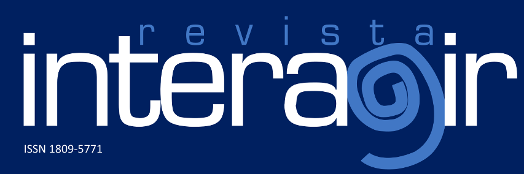
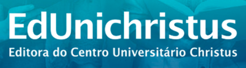

Núcleo de Inovação Tecnológica

O Núcleo de Inovação Tecnológica (NIT) é um setor estratégico da instituição, responsável por promover, apoiar e gerenciar iniciativas voltadas à inovação, proteção do conhecimento e transferência de tecnologia.
Atuando como elo entre a comunidade acadêmica, o setor produtivo e a sociedade, o NIT tem como missão fomentar o desenvolvimento de soluções inovadoras que contribuam para o avanço científico, tecnológico e social.
Entre suas principais atribuições, destacam-se o apoio à formalização de patentes, registro de softwares, proteção da propriedade intelectual, orientação sobre direitos autorais e incentivo à cultura empreendedora dentro e fora da universidade.
O núcleo também presta suporte a projetos de pesquisa com potencial de aplicação prática, além de intermediar parcerias com empresas, startups e órgãos públicos.
Com uma equipe multidisciplinar e comprometida com a inovação, o NIT busca transformar ideias em resultados concretos, estimulando a criação de produtos, processos e serviços que atendam às demandas contemporâneas e gerem impacto positivo no meio acadêmico, econômico e social.
Tradução Inteligente com IA de Alta Performance (DeepL)
O Núcleo de Inovação Tecnológica (NIT) da Unichristus é pioneiro na
utilização de Inteligência Artificial em seus processos, trazendo
soluções práticas, rápidas e de alto impacto para a comunidade
acadêmica. Nesta área, você terá acesso a uma poderosa ferramenta de
tradução de artigos científicos, apoiada pelo DeepL, uma das IAs
mais avançadas do mundo para tradução de textos.
Nosso objetivo é simplificar o acesso a informações globais,
permitindo que estudantes, professores e pesquisadores possam
trabalhar com conteúdos em diferentes idiomas de forma ágil e com
alta precisão.
O que é o DeepL e como ele funciona?
O DeepL é uma plataforma de tradução automática baseada em redes neurais avançadas, que se destaca pela qualidade e naturalidade dos textos traduzidos. Diferente de tradutores convencionais, o DeepL consegue compreender o contexto e as nuances linguísticas, entregando traduções mais próximas da escrita humana. Ele funciona analisando milhões de exemplos de textos em vários idiomas e aplicando modelos de aprendizado profundo (Deep Learning) para interpretar frases de maneira mais inteligente, garantindo traduções confiáveis para o uso acadêmico e profissional.
Submissão revista Interagir
A Revista Interagir é um periódico multidisciplinar IMPRESSO, de acesso aberto e periodicidade trimestral. Possui uma seção que publica pesquisas originais de alto mérito científico desenvolvidas pela comunidade acadêmica da Unichristus e que contribuem para o estudo do ensino e disciplinas afins. A preferência para publicação será dada a artigos que relatam pesquisas originais.
A Revista Interagir Obteve a classificação no WebQualis – Capes 2017 2020 (Plataforma Sucupira):
| ADMINISTRAÇÃO PÚBLICA E DE EMPRESAS, CIÊNCIAS CONTÁBEIS E TURISMO | A2 |
| ARQUITETURA, URBANISMO E DESIGN | A2 |
| ARTES | A2 |
| DIREITO | A2 |
| EDUCAÇÃO | A2 |
| ENSINO | A2 |
| INTERDISCIPLINAR | A2 |
| MEDICINA II | A2 |
| MEDICINA III | A2 |
| PSICOLOGIA | A2 |
| SAÚDE COLETIVA | A2 |
Foco e Escopo
A Revista Interagir é um periódico multidisciplinar IMPRESSO, de acesso aberto e periodicidade trimestral. Possui uma seção que publica pesquisas originais de alto mérito científico desenvolvidas pela comunidade acadêmica da Unichristus e que contribuem para o estudo do ensino e disciplinas afins. A preferência para publicação será dada a artigos que relatam pesquisas originais.
Processo de Avaliação pelos Pares
O processo de avaliação desta revista segue os princípios da revisão por pares (Peer Review).
Os manuscritos encaminhados para publicação na Revista Interagir são inicialmente avaliados pela Secretaria Editorial quanto à adequação às normas da revista.
Posteriormente, serão encaminhados ao Editor que fará uma primeira avaliação e, em seguida, encaminhado, sem identificação de autoria, a pelo menos dois revisores, inclusive avaliadores externos, para avaliação e emissão de parecer fundamentado (peer review). Essas opiniões serão utilizadas pelos editores para decidir sobre a aceitação, ou não, das mesmas. Em caso de divergência de opinião entre os revisores, o manuscrito será encaminhado a um terceiro revisor para subsidiar a decisão final.
O contato com a Secretaria Editorial da Revista Interagir deve ser feito preferencialmente pelo e-mail: revistainteragir01@unichristus.edu.br ou pelo endereço: Revista Interagir. Av. Dom Luís, 911 - Meireles, Fortaleza - CE, 60160-230. Fone: +55 85 3457-5300.
CLICK AQUI PARA SUBMETER SEU ARTIGOEnvio de livros para Editora EdUnichristus
A Editora Unichristus tem como missão disseminar o conhecimento produzido pela comunidade acadêmica, valorizando pesquisas, estudos e produções literárias que contribuem para o avanço científico, cultural e educacional.
Este espaço foi desenvolvido para que autores possam submeter seus livros à editora, de forma prática e organizada. Seja você professor, pesquisador ou aluno, aqui é o local para compartilhar sua produção intelectual com a comunidade acadêmica e com a sociedade.
Nosso compromisso é dar visibilidade às obras que refletem a qualidade e a relevância do trabalho desenvolvido na Unichristus, fortalecendo a presença da instituição no cenário editorial e promovendo a democratização do conhecimento.
Orientações aos autores
O interessado em publicar através da EdUnichristus deverá submeter o manuscrito para apreciação de acordo com as instruções definidas no Regimento da EdUnichristus. Após aprovação de viabilidade pela Diretoria Executiva, o pedido será levado à apreciação do Conselho Editorial, ocasião em que, caso aceito, será direcionado para as etapas de revisão técnica, linguística e de normalização (nesta sequência).
Após as etapas de aprovação e revisão, será iniciado o processo de editoração propriamente dito. A EdUnichristus entrará em contato com o(s) autor(es) para definição conjunta do projeto editorial (capa, fonte, estilos, cores, etc.) e, logo em seguida, será fornecida a primeira versão de prova para aprovação pelo(s) autor(es).
Vale ressaltar que não serão aceitas para análise obras em formato e linguagem de tese ou dissertação. O autor deve ajustar o texto ao formato de livro antes de submetê-lo à EdUnichristus.
Caso tenha interesse em publicar por meio da EdUnichristus, siga as instruções disponibilizadas no tópico ao final desta página sobre Submissão de Manuscrito.
Regras de Formatação
Para otimizar o processo de produção da obra e facilitar a comunicação entre os autores envolvidos e a equipe editorial, devem ser atendidas algumas normas em relação ao formato dos arquivos e à adequação do texto apresentado. O processo de produção somente se iniciará após o envio de todas as partes da obra em conformidade com as orientações apresentadas a seguir:
- Envio do arquivo original em compatível com Word, nos formatos (.doc ou .docx) através do formulário disponível ao fim desta página.
- Envio de texto para contracapa entre 1.500 e 5.000 caracteres.
- Envio das imagens em arquivos separados na resolução mínima de 300 ppi e 1.500 pixels de largura.
- Quando usadas imagens de terceiros, estas devem ser referenciadas.
- Quando usadas imagens de autoria própria, o responsável pela obra deverá providenciar a criação destas dentro dos padrões exigidos pela EdUnichristus.
- Preferencialmente, não utilizar notas de referência.
- Identificar com clareza os níveis de títulos e subtítulos.
- Todos os trabalhos submetidos à apreciação pela EdUnichristus devem seguir o padrão de citação e referências da ABNT (para maiores esclarecimentos, consulte o Guia de Normalização da Unichristus).
Fluxo Editorial
Esteja ciente de que o material submetido à apreciação da EdUnichristus passará por diferentes etapas até chegar à editoração propriamente dita. O processo de revisão do manuscrito ocorrerá da seguinte forma:
- Revisão Técnica (realizada por um professor ou profissional com expertise na área temática que não esteja envolvido com a autoria do material analisado).
- Revisão Linguística (realizada pela equipe de apoio linguístico da Unichristus).
- Revisão Normativa (realizada pela equipe de bibliotecárias da Unichristus).
Em caso de dúvidas sobre a diagramação do livro ou acerca da elegibilidade da obra para obtenção de ISBN, consulte o guia a seguir.
Baixar guiaSubmissão de Manuscrito
Utilize o formulário abaixo para submeter o manuscrito da obra para qual deseja publicação. Após o envio dos dados básicos, incluindo o arquivo do material em formato Word, você receberá o contato da nossa equipe editorial, com o objetivo de coletar informações mais detalhadas.
NOTA: Para categorizar a grande área, a área, a subárea e a especialidade nas quais a sua obra se enquadra, utilize a tabela de Áreas do Conhecimento da CAPES, disponível AQUI.